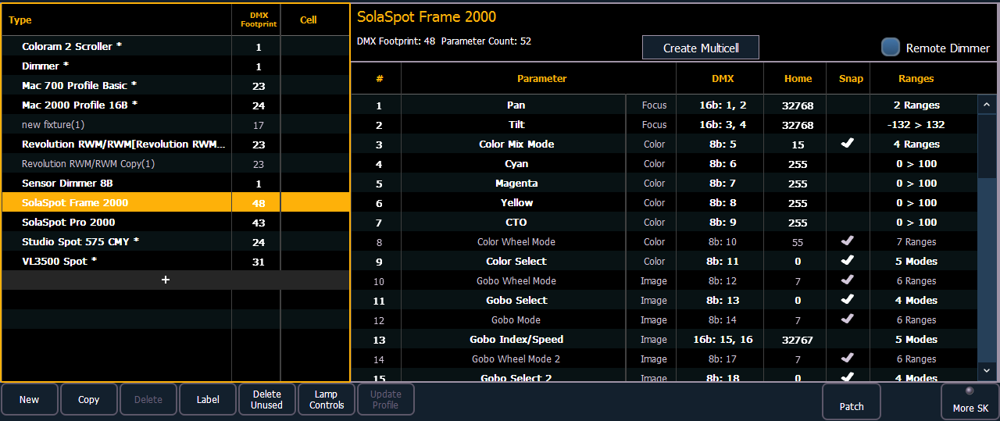

Ion provides you with the ability to create your own fixture type within patch and store it with your show file. You can name the fixture, assign all necessary parameters, define the address and operational range of those parameters, see fixture modes and their properties, and set lamp controls.
Note: Before you create a new fixture, it is helpful to look at a few fixture personalities of similar fixtures to get an idea of how to set yours up. You may even want to look at their user manuals to see how their defined DMX footprints look as a fixture profile. This is especially helpful when creating modes.
The fixture creator is accessible from patch. Once a fixture has been created, it is stored in the show file. It is not added to the fixture library. If you want to use the created fixture in another show file, you will need to use merge. See Merging Custom Fixtures into a New Show File
If you would like to remove any unused fixtures from this list, press {Delete Unused}.
